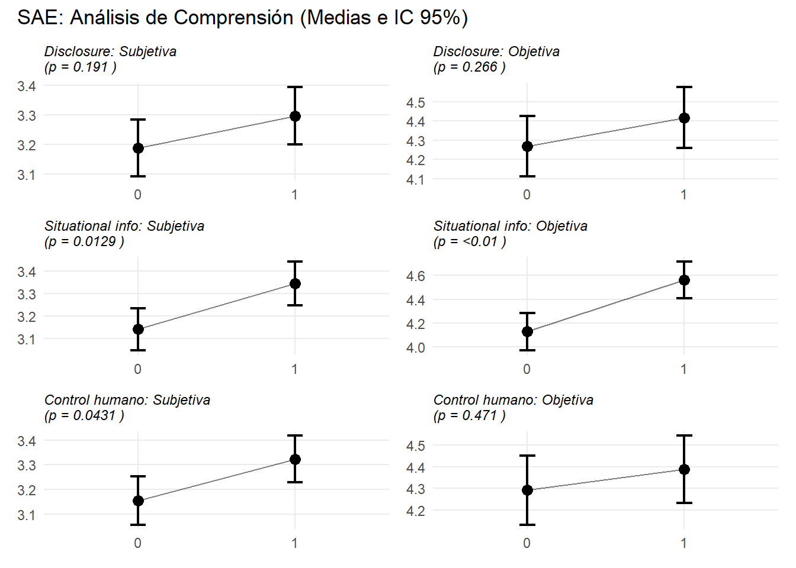
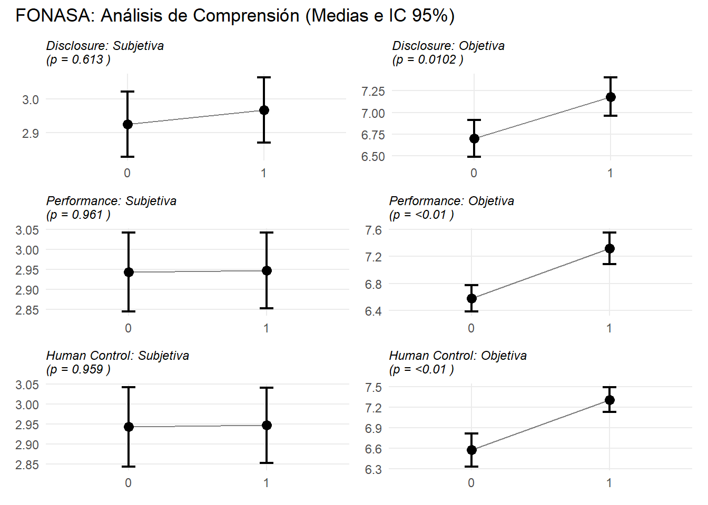
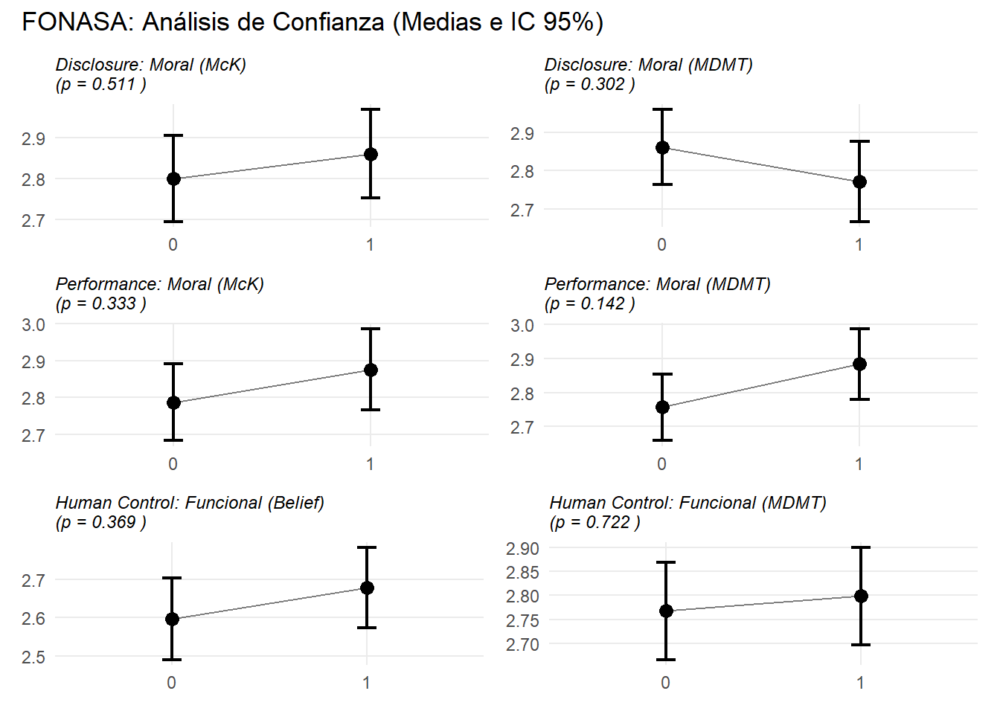

| Variable |
Distribución (%)
|
||
|---|---|---|---|
| No eliminado N = 5141 |
Eliminado N = 851 |
Overall N = 5991 |
|
| genero | |||
| f | 255 (50%) | 35 (41%) | 290 (48%) |
| m | 259 (50%) | 50 (59%) | 309 (52%) |
| comuna_rm | |||
| Región | 157 (31%) | 15 (18%) | 172 (29%) |
| RM | 357 (69%) | 70 (82%) | 427 (71%) |
| education_recoded | |||
| Media incompleta | 13 (2.5%) | 2 (2.4%) | 15 (2.5%) |
| Media completa | 146 (29%) | 26 (31%) | 172 (29%) |
| Técnico superior | 182 (36%) | 25 (29%) | 207 (35%) |
| Universitaria | 170 (33%) | 32 (38%) | 202 (34%) |
| Posgrado | 1 (0.2%) | 0 (0%) | 1 (0.2%) |
| edad_tramo | |||
| 18–30 | 110 (21%) | 19 (22%) | 129 (22%) |
| 31–45 | 289 (56%) | 46 (54%) | 335 (56%) |
| 46–65 | 115 (22%) | 20 (24%) | 135 (23%) |
| 1 n (%) | |||
Reporte descriptivo inicial SAE FONASA
Una distribución de los casos eliminados (Son aleatorios?)
¿Son aleatorios los eliminados?
| Aleatoriedad de la exclusión por validez de respuesta | |||
|---|---|---|---|
| Tests χ² comparando casos eliminados vs no eliminados | |||
| Variable demográfica | χ² | gl | p-valor |
| genero | 1.750 | 1 | 0.185 |
| comuna_rm | 5.310 | 1 | 0.021 |
| education_recoded | 1.500 | 4 | 0.826 |
| edad_tramo | 0.130 | 2 | 0.936 |
| Hipótesis nula: la eliminación es independiente del perfil demográfico. | |||
Descripción y validez de los datos
| Variable | Items | Cronbach_Alpha | Mean | SD | Min | Max |
|---|---|---|---|---|---|---|
| FONASA | ||||||
| fonasa_conf_belief_funcional_pre | 3 | 0.901 | 3.143 | 0.961 | 1 | 5 |
| fonasa_conf_belief_funcional_pos | 3 | 0.920 | 2.637 | 1.028 | 1 | 5 |
| fonasa_conf_belief_moral_pos | 4 | 0.930 | 2.830 | 1.035 | 1 | 5 |
| fonasa_conf_word_funcional_pre | 6 | 0.936 | 3.179 | 0.900 | 1 | 5 |
| fonasa_conf_word_funcional_pos | 6 | 0.948 | 2.782 | 0.979 | 1 | 5 |
| fonasa_conf_word_moral_pre | 6 | 0.952 | 3.117 | 0.917 | 1 | 5 |
| fonasa_conf_word_moral_pos | 6 | 0.964 | 2.818 | 0.980 | 1 | 5 |
| fonasa_comp_subjetiva_pre | 4 | 0.921 | 2.980 | 0.982 | 1 | 5 |
| fonasa_comp_subjetiva_pos | 10 | 0.921 | 2.945 | 0.940 | 1 | 5 |
| fonasa_comp_subjetiva_otros_pos | 10 | 0.921 | 2.872 | 0.874 | 1 | 5 |
| SAE | ||||||
| sae_conf_belief_funcional_pre | 3 | 0.881 | 3.195 | 0.959 | 1 | 5 |
| sae_conf_belief_funcional_pos | 3 | 0.903 | 3.275 | 0.913 | 1 | 5 |
| sae_conf_belief_moral_pre | 4 | 0.915 | 3.359 | 0.965 | 1 | 5 |
| sae_conf_belief_moral_pos | 4 | 0.912 | 3.423 | 0.948 | 1 | 5 |
| sae_conf_word_funcional_pre | 6 | 0.931 | 3.232 | 0.890 | 1 | 5 |
| sae_conf_word_funcional_pos | 6 | 0.943 | 3.278 | 0.860 | 1 | 5 |
| sae_conf_word_moral_pre | 6 | 0.944 | 3.213 | 0.894 | 1 | 5 |
| sae_conf_word_moral_pos | 6 | 0.954 | 3.252 | 0.863 | 1 | 5 |
| sae_comp_subjetiva_pre | 4 | 0.928 | 3.198 | 0.971 | 1 | 5 |
| sae_comp_subjetiva_pos | 9 | 0.918 | 3.240 | 0.939 | 1 | 5 |
| sae_comp_subjetiva_otros_pos | 9 | 0.918 | 3.257 | 0.873 | 1 | 5 |
Validez de prueba objetiva
Split-Half
| Bateria | Items | n_sujetos | Spearman_Brown |
|---|---|---|---|
| FONASA Pre | 8 | 514 | 0.667 |
| FONASA Pos | 11 | 514 | 0.734 |
| SAE Pre | 6 | 514 | 0.627 |
| SAE Pos | 6 | 514 | 0.713 |
(IRT)
Pruebas de t-test




Correlaciones
SAE muestra correlaciones fuertes y positivas entre sus medidas principales. Algunas superan el >.85 que da cuenta de un riesgo de colinealidad al que tener ojo. En FONASA no todas las correlaciones son significativas, llamando la atención las débiles relaciones de comprensión objetiva.
SAE
Revisión de colinealidad
Los valores VIF son muy bajos (>2.0), por lo que no existe una colinealidad problemática entre las variables.
| Sistema | Variable A | VIF | Variable B | VIF | Variable C | VIF |
|---|---|---|---|---|---|---|
| SAE | disclosure | 1.001 | inf_situacional | 1 | control_humano | 1.001 |
| FONASA | ai_disclosure_fonasa | 1.001 | performance_fonasa | 1 | control_humano_fonasa | 1.001 |
Modelos multivariados
| sae conf belief funcional pre |
sae conf belief funcional pos |
sae conf belief moral pre | sae conf belief moral pos | sae conf word funcional pre |
sae conf word funcional pos |
sae conf word moral pre | sae conf word moral pos | sae comp subjetiva pre | sae comp subjetiva pos | sae comp subjetiva otros pos |
sae comp objetiva pre | sae comp objetiva pos | |
| Predictors | Estimates | Estimates | Estimates | Estimates | Estimates | Estimates | Estimates | Estimates | Estimates | Estimates | Estimates | Estimates | Estimates |
| (Intercept) | 3.02 *** (0.08) |
3.12 *** (0.08) |
3.16 *** (0.08) |
3.21 *** (0.08) |
3.10 *** (0.08) |
3.14 *** (0.07) |
3.11 *** (0.08) |
3.11 *** (0.07) |
2.98 *** (0.08) |
3.00 *** (0.08) |
3.03 *** (0.07) |
3.84 *** (0.13) |
4.01 *** (0.13) |
| disclosure [1] | 0.08 (0.08) |
0.03 (0.08) |
0.11 (0.08) |
0.03 (0.08) |
0.05 (0.08) |
0.03 (0.08) |
0.02 (0.08) |
0.02 (0.08) |
0.11 (0.09) |
0.10 (0.08) |
0.05 (0.08) |
0.13 (0.13) |
0.14 (0.13) |
| inf situacional [1] | 0.17 * (0.08) |
0.11 (0.08) |
0.24 ** (0.08) |
0.19 * (0.08) |
0.14 (0.08) |
0.08 (0.08) |
0.08 (0.08) |
0.05 (0.08) |
0.18 * (0.09) |
0.21 * (0.08) |
0.23 ** (0.08) |
0.54 *** (0.13) |
0.44 ** (0.13) |
| control humano [1] | 0.11 (0.08) |
0.17 * (0.08) |
0.05 (0.08) |
0.21 * (0.08) |
0.08 (0.08) |
0.16 * (0.08) |
0.11 (0.08) |
0.21 ** (0.08) |
0.15 (0.09) |
0.17 * (0.08) |
0.18 * (0.08) |
-0.17 (0.13) |
0.10 (0.13) |
| Observations | 514 | 514 | 514 | 514 | 514 | 514 | 514 | 514 | 514 | 514 | 514 | 514 | 514 |
| R2 / R2 adjusted | 0.013 / 0.007 | 0.013 / 0.007 | 0.019 / 0.014 | 0.022 / 0.016 | 0.009 / 0.004 | 0.011 / 0.006 | 0.006 / 0.000 | 0.015 / 0.009 | 0.018 / 0.012 | 0.023 / 0.017 | 0.029 / 0.023 | 0.037 / 0.031 | 0.024 / 0.018 |
| * p<0.05 ** p<0.01 *** p<0.001 | |||||||||||||
| fonasa conf belief funcional pre |
fonasa conf belief funcional pos |
fonasa conf belief moral pos |
fonasa conf word funcional pre |
fonasa conf word funcional pos |
fonasa conf word moral pre |
fonasa conf word moral pos |
fonasa comp subjetiva pre | fonasa comp subjetiva pos | fonasa comp subjetiva otros pos |
fonasa comp objetiva pre | fonasa comp objetiva pos | |
| Predictors | Estimates | Estimates | Estimates | Estimates | Estimates | Estimates | Estimates | Estimates | Estimates | Estimates | Estimates | Estimates |
| (Intercept) | 3.24 *** (0.08) |
2.57 *** (0.09) |
2.72 *** (0.09) |
3.25 *** (0.08) |
2.72 *** (0.09) |
3.25 *** (0.08) |
2.79 *** (0.09) |
2.98 *** (0.09) |
2.92 *** (0.08) |
2.81 *** (0.08) |
3.29 *** (0.10) |
5.96 *** (0.18) |
| ai disclosure fonasa [1] | -0.11 (0.08) |
-0.03 (0.09) |
0.06 (0.09) |
-0.08 (0.08) |
-0.03 (0.09) |
-0.16 (0.08) |
-0.09 (0.09) |
0.12 (0.09) |
0.04 (0.08) |
0.03 (0.08) |
0.48 *** (0.10) |
0.50 ** (0.18) |
| performance fonasa [1] | -0.04 (0.08) |
0.09 (0.09) |
0.09 (0.09) |
-0.01 (0.08) |
0.13 (0.09) |
-0.04 (0.08) |
0.13 (0.09) |
-0.07 (0.09) |
0.00 (0.08) |
0.03 (0.08) |
0.05 (0.10) |
0.75 *** (0.18) |
| control humano fonasa [1] | -0.05 (0.08) |
0.08 (0.09) |
0.07 (0.09) |
-0.07 (0.08) |
0.03 (0.09) |
-0.08 (0.08) |
0.02 (0.09) |
-0.05 (0.09) |
0.01 (0.08) |
0.06 (0.08) |
-0.01 (0.10) |
0.76 *** (0.18) |
| Observations | 514 | 514 | 514 | 514 | 514 | 514 | 514 | 514 | 514 | 514 | 514 | 514 |
| R2 / R2 adjusted | 0.004 / -0.001 | 0.004 / -0.002 | 0.004 / -0.002 | 0.003 / -0.003 | 0.005 / -0.001 | 0.009 / 0.003 | 0.006 / 0.001 | 0.006 / -0.000 | 0.001 / -0.005 | 0.002 / -0.004 | 0.043 / 0.037 | 0.076 / 0.070 |
| * p<0.05 ** p<0.01 *** p<0.001 | ||||||||||||